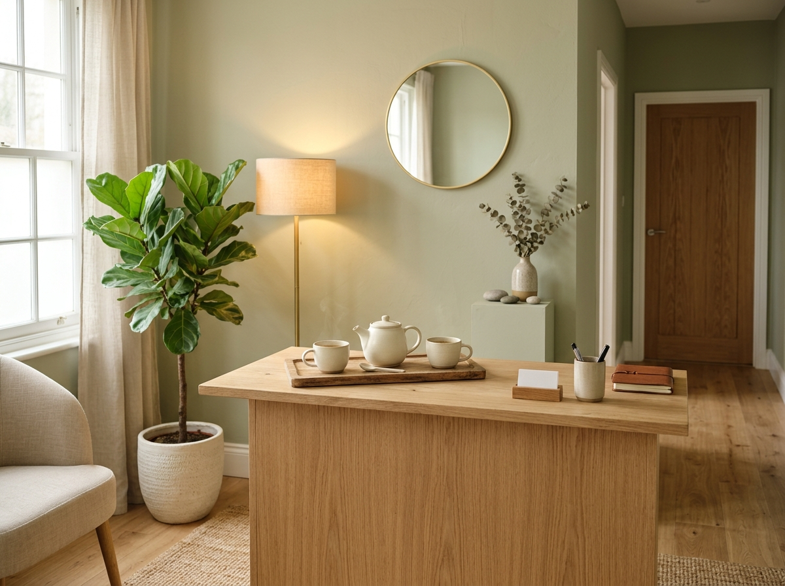
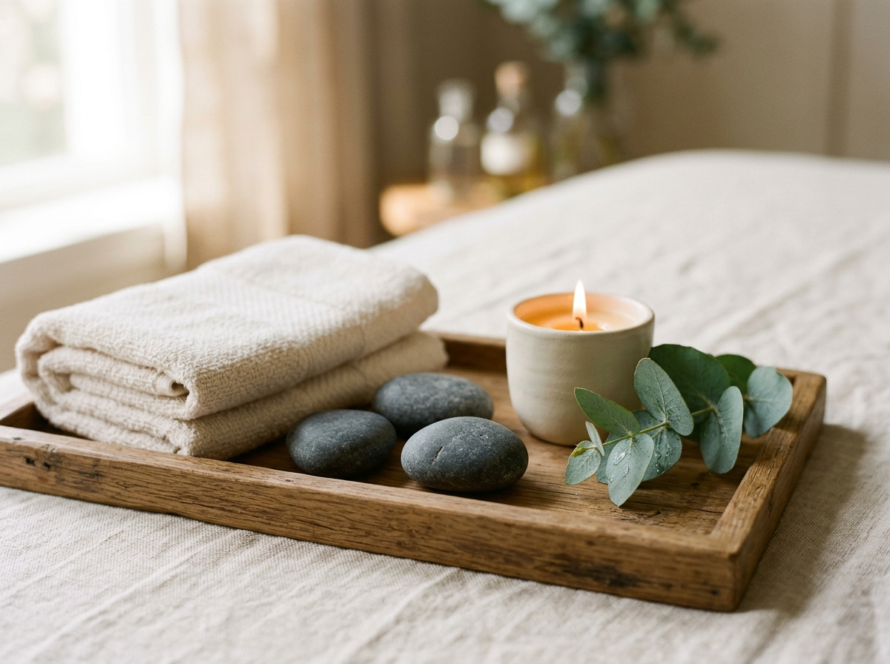

What should I bring?
Bring any questions you have and confirm with the centre whether there is anything specific to prepare. Do not stop medication for a complementary session.

Send an enquiry or ask about any therapy on this site—the centre confirms availability, fees and location directly.
Request an appointment
Share what you would like to explore and our front desk will follow up with available times, session details and preparation notes.
Speak with our reception desk to confirm session availability, duration, fees and accessibility before your visit.
Please avoid submitting diagnoses, medication lists or sensitive medical details through this web form. Share health context directly during your private intake.
Located near MG Road in Labbipet, Vijayawada with convenient street access and quiet ground-floor/lift entry.
2nd Floor, Lotus Arcade, MG Road · Open Mon–Sat, 9:00 AM – 7:30 PM
Open in OpenStreetMap
Bring any questions you have and confirm with the centre whether there is anything specific to prepare. Do not stop medication for a complementary session.
Session duration and fees have not been supplied. Confirm these details when requesting an appointment.
Ask the centre for its current cancellation and rescheduling policy before confirming a booking.